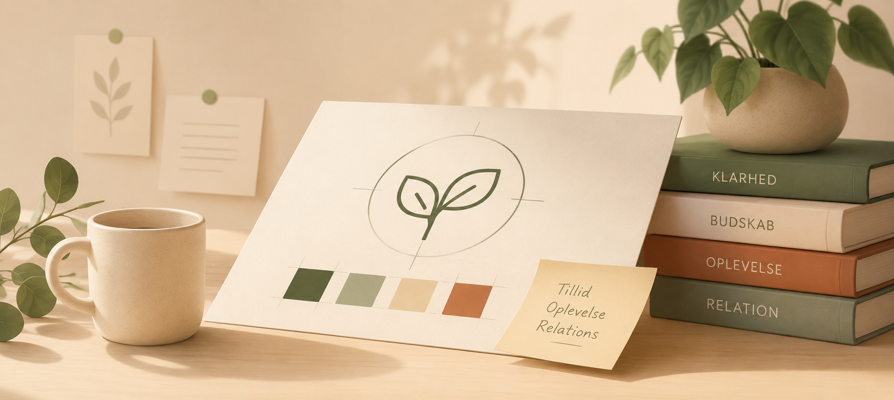
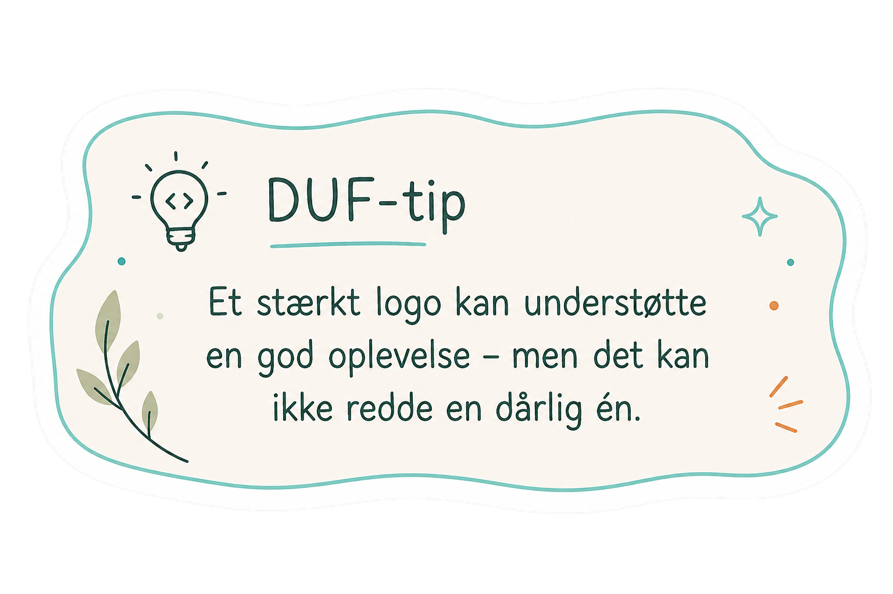
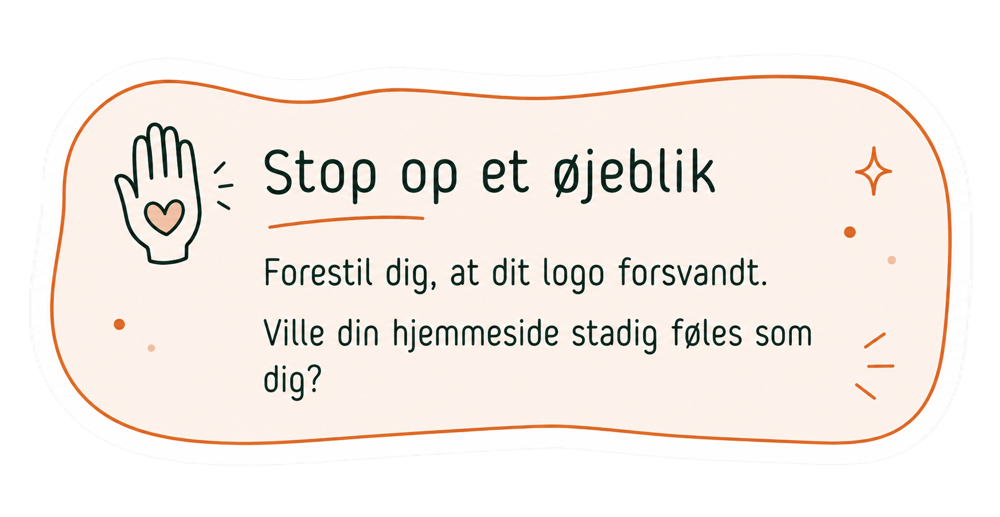
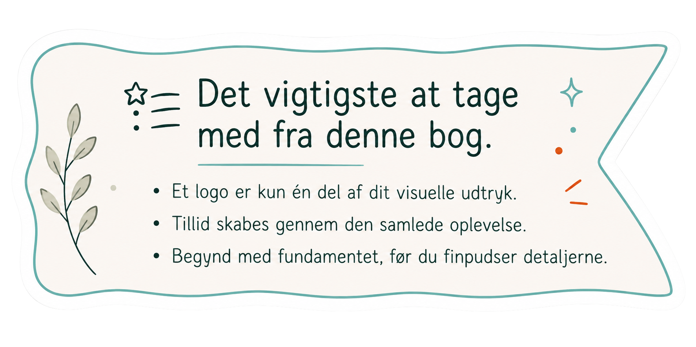

Hvorfor et flot logo ikke skaber en stærk virksomhed

Mange nye behandlere bruger enormt meget energi på at få lavet det perfekte logo.
Men dit logo er sjældent det eneste, der afgør, om mennesker får tillid til dig.
Dig & dit logo
Hvis du spørger nye virksomhedsejere, hvad de gerne vil have på plads først, svarer mange: "Et logo."
Det giver god mening.
Et logo føles konkret.
Det gør virksomheden virkelig.
Men sandheden er, at de færreste klienter vælger dig på grund af dit logo.
De vælger dig, fordi de får tillid til dig.

Et logo er kun én lille del af oplevelsen
Et logo er virksomhedens underskrift.
Det er ikke hele historien.
Når en potentiel klient besøger din hjemmeside, lægger de mærke til langt mere end dit logo.
De bemærker blandt andet:
- Om siden virker overskuelig.
- Om sproget føles menneskeligt.
- Om farver og billeder passer sammen.
- Om det er tydeligt, hvad du tilbyder.
Alle de små ting tilsammen skaber et førstehåndsindtryk.

Dit visuelle udtryk handler om genkendelighed
Det betyder ikke, at logoet er ligegyldigt.
Tværtimod.
Men et godt logo fungerer bedst som en del af et større visuelt udtryk.
Når farver, typografi, billeder og tone hænger sammen, bliver din virksomhed lettere at genkende og huske.
Det er den helhed, dine klienter møder.
Ikke kun logoet.

Det vigtigste først
Hvis du står helt i begyndelsen af din virksomhed, kan det være fristende at bruge uger på at finpudse et logo.
Men ofte er tiden bedre brugt på at skabe klarhed over:
- Hvem du hjælper.
- Hvad du hjælper med.
- Hvordan du gerne vil opleves.
Når det fundament er på plads, bliver det også langt lettere at skabe et visuelt udtryk, der føles ægte.

Klar til næste skridt?
I vækstrummet Dit udtryk arbejder vi med at skabe en visuel identitet, der hænger sammen med den oplevelse, du ønsker at give dine klienter – ét skridt ad gangen.
